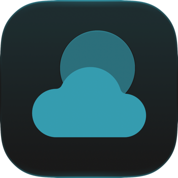
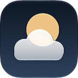

Eesti Ilm · Design Book · “Loojang” · version 1 · 26 November 2026
Eesti Ilm
Design Book
How the app looks: the app icon, colors, type, weather symbols, screens, widgets, and the App Store and website. Items marked Proposed differ from the app today and need their own tickets.
1App icon Proposed
A pale sun setting behind a soft cloud, on a plum-to-coral dusk sky (“Loojang”). Two layers, no text, no rays. It is built in Icon Composer, so iOS adds the Liquid Glass highlights and shadows.

Construction
| Measure (1024 canvas = 100) | Value |
|---|---|
| Sun | circle, centre (54.8, 38.2), radius 21.1 |
| Cloud | one closed outline: three round bumps (radius 10, 13, 9) with 2.5 valley fillets on a flat bottom, scaled 1.364, 63.8 wide |
| Group bounds | x 18–82, y 17–77, centred left to right, visual weight at (51.6, 51.7) |
| Proportion | cloud width ÷ sun diameter = 1.52 (close to 1.6) |
| Overlap | the cloud covers the lower half of the sun |
| Safe area | all shapes stay inside the central 80% (dashed) |
The cloud must stay one path. Built from overlapping circles, its edge shows seams and a doubled Liquid Glass rim.
Icon Composer settings
| Layer | Default | Dark | Tinted | Glass and effects |
|---|---|---|---|---|
| Background | #3B2C5A → #F29E7A | #15111F → #4A2C3C | set by iOS | linear gradient, top to bottom |
| Group 1 · Cloud (top) | #FFFFFF, opacity 90% | #E8DDEE, opacity 90% | #FFFFFF, opacity 100%, Liquid Glass off | Liquid Glass on, translucency 40%, specular, neutral shadow 50% |
| Group 2 · Sun | #FFD9A0 | #F7C58A | #A6A6A6 | specular, neutral shadow 50%, no translucency |
Why the tinted colors: iOS builds tinted icons from brightness only. A white cloud over a light-grey sun keeps the two shapes apart (cloud 4.5 : 1 to the background, 1.8 : 1 to the sun). With the default colors they merge into one blob.
Do and don't



2Color · Loojang Proposed
Named colors for the app and the widget, each with a light and a dark value. Add them to the asset catalogs as color sets with these names. Today the app uses only system colors and a default accent. Click a hex value to copy it.
Contrast (WCAG 2.1, computed)
Rules
- Use AccentColor sparingly: the selected tab, buttons, links. Never for large backgrounds.
- Temperatures below 0° use TemperatureCold, 0° and above use TemperatureWarm. Always keep the minus sign, so the meaning never depends on color.
- The widget gradient is the only large area of brand color. The app itself stays on neutral backgrounds.
- The icon colors (sky gradient, pale sun) are for the icon and marketing only, not for UI text.
3Type
The system font (SF Pro) everywhere, so Dynamic Type, accessibility sizes and Estonian letters (õ ä ö ü š ž) work for free. Temperatures use the rounded design (SF Pro Rounded) with tabular digits, so numbers line up and feel friendly. Sizes are the default (Large) Dynamic Type size.
| Element | Text style | Sample | Status |
|---|---|---|---|
| Screen title | Large Title, bold (navigation bar) | Prognoos | As today |
| Date section header | Headline | Homme, 27. november | As today |
| Day part title | Title 2, semibold | Öö | As today |
| Temperature range | Title 2, medium, rounded, tabular digits | −8° | 2° | Proposed rounded |
| Forecast text | Body | Pilves selgimistega, kohati lörtsi. | As today |
| Town name | Subheadline | Kuressaare | As today |
| Town temperature | Subheadline, rounded, tabular digits, temperature color | −7° | Proposed rounded + color |
| Widget temperature | Title 2 (small) / Callout (medium), semibold, rounded | 2° | Proposed rounded |
| Widget labels | Caption / Caption 2 | Tallinn · Öö −8° | As today |
// UIKit: rounded, tabular temperatures that scale with Dynamic Type let base = UIFont.preferredFont(forTextStyle: .title2) let rounded = UIFont.monospacedDigitSystemFont(ofSize: base.pointSize, weight: .medium) let descriptor = rounded.fontDescriptor.withDesign(.rounded) ?? rounded.fontDescriptor label.font = UIFontMetrics(forTextStyle: .title2).scaledFont(for: UIFont(descriptor: descriptor, size: 0)) label.adjustsFontForContentSizeCategory = true // SwiftUI (widget) Text(temperature).font(.title2.weight(.semibold)).fontDesign(.rounded).monospacedDigit()
Write sub-zero temperatures with a real minus sign − (U+2212), not a hyphen.
4Weather symbols Proposed
SF Symbols from WeatherPhenomenonIcon, in their .fill variants with palette rendering: the cloud in SymbolCloud, the sun in SymbolSun, rain, snow and fog in SymbolPrecipitation. Today the app uses outline symbols in multicolor. In the widget all parts are white except the sun.
Light
Dark
Widget
// UIKit
let colors: [UIColor] = [.symbolCloud, .symbolSun] // cloud.sun.fill, cloud.bolt.fill
// or [.symbolCloud, .symbolPrecipitation] for rain, snow, sleet, hail, fog
iconView.preferredSymbolConfiguration = UIImage.SymbolConfiguration(textStyle: .title1)
.applying(UIImage.SymbolConfiguration(paletteColors: colors))
5Screens and widgets
The forecast screen stays a standard inset grouped list. The changes are color and type only: the temperature colors, rounded numbers, palette symbols and the accent.
Forecast card anatomy (as built today)
| Part | Spec |
|---|---|
| Card | Inset grouped list cell on CardBackground; margins 12 pt top and bottom, 20 pt leading and trailing; vertical stack, 12 pt spacing |
| Title row | Day part title (Title 2 semibold) takes the free width; symbol (Title 1 size) on the trailing edge; 12 pt spacing |
| Temperature | Below the title row, 8 pt; Title 2 medium rounded, each bound in its temperature color, divider | in TextSecondary |
| Forecast text | Body, TextPrimary, unlimited lines |
| Separator | 1 px (hairline), Separator color |
| Town rows | Name (Subheadline) · symbol (Body size) · temperature (Subheadline rounded); 12 pt between columns, 8 pt between rows |
| Tab bar | System Liquid Glass tab bar; selected tab in AccentColor |
| Spacing scale | 4 · 8 · 12 · 16 · 20 pt; corners and materials come from the system |
Widgets Proposed
Loojang gradient background (WidgetGradientTop → WidgetGradientBottom), white text, palette symbols in their widget colors. In tinted and clear Home Screen modes iOS removes the background, so the layout must work as white on any color.
6Accessibility
All text tokens pass WCAG AA (4.5 : 1) on their backgrounds in light and dark mode, including white text on the widget gradient.
Every label uses a text style and adjustsFontForContentSizeCategory. At accessibility sizes the card stacks the title and symbol vertically (already in the app).
Temperature colors only add emphasis: the minus sign carries the meaning. Symbols always have a VoiceOver label from WeatherPhenomenonIcon.localizedName(for:).
The icon has explicit tinted colors and stays recognisable in Default, Dark, Tinted and Clear.
7App Store and website
App Store
- Icon: Xcode builds the store icon from
EestiIlm.icon. Useicon-1024.png(exported from Icon Composer) only where a flat image is needed. - Screenshots: plain app screenshots without captions or frames (as in
fastlane/screenshots/en-US/): iPhone 6.9" 1320×2868 and iPad 13" 2064×2752, English UI, light mode. A real forecast with a sub-zero night shows both temperature colors. - Listing: the store page is English only; the brand color shows through the icon and screenshots, not through custom graphics.
Website · eestiilm.app
The same tokens as CSS custom properties, a hero on the Loojang gradient, and the system font stack (no web fonts).
Eesti Ilm
- Favicon and Apple touch icon: from
icon-1024.png(180×180 forapple-touch-icon, 32×32 and 16×16 favicons). - App Store badge: use Apple's official badge artwork unchanged, on the gradient or on the page background.
- Dark mode: switch to the dark token values with
prefers-color-scheme; the hero gradient stays the same.
8Files
assets/icon/EestiIlm.icon· the Icon Composer source of the app icon (open with Icon Composer, add to Xcode)assets/icon/icon-1024.png· flat 1024 export for the website and marketingassets/icon/icon-*.png· renders of each appearanceassets/symbols/· palette renders of the weather symbols, for reference only (the app draws SF Symbols itself)Eesti-Ilm-Design-Book.pdf· this book as a PDF, for sharing
Rendered with Xcode 27.2 Icon Composer (ictool). Earlier explorations (other palettes and icon ideas) are kept outside the repo.